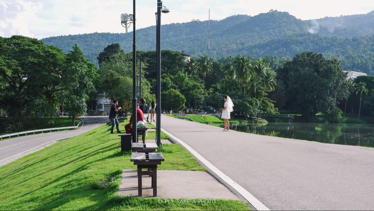
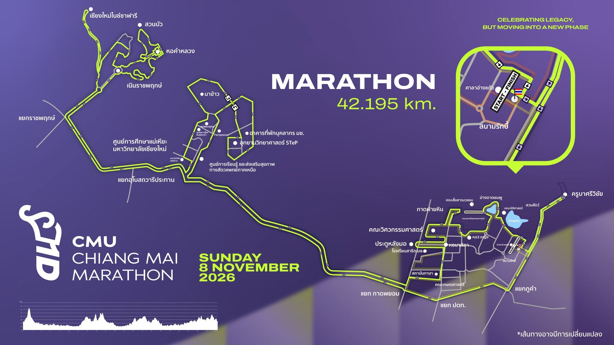

สุขภาพและแรงบันดาลใจ
ส่งเสริมให้การวิ่งเป็นจุดเริ่มต้นของสุขภาพที่ดีและสร้างแรงบันดาลใจให้ทุกคนกล้าก้าวไปถึงเป้าหมาย

CMU CHIANG MAI MARATHON 2026
งานวิ่งที่ชวนนักวิ่งทุกระดับมาสัมผัสเสน่ห์ของเชียงใหม่ ผ่านเส้นทางรอบมหาวิทยาลัยเชียงใหม่และบรรยากาศอันงดงามของดอยสุเทพ
Our Story
CMU Chiang Mai Marathon เกิดขึ้นจากความตั้งใจที่จะสร้างพื้นที่ให้ทุกคนได้ออกมาดูแลสุขภาพ ท้าทายขีดจำกัดของตนเอง และแบ่งปันพลังดี ๆ ผ่านการวิ่ง
เราเชื่อว่าไม่ว่าคุณจะเป็นนักวิ่งหน้าใหม่หรือนักวิ่งมากประสบการณ์ ทุกคนต่างมีเส้นชัยเป็นของตัวเอง งานนี้จึงออกแบบให้เปิดกว้าง เป็นมิตร และเต็มไปด้วยความทรงจำตั้งแต่จุดปล่อยตัวจนถึงก้าวสุดท้าย

4 ระยะ
สำหรับทุกเป้าหมายของนักวิ่ง
Why We Run
ส่งเสริมให้การวิ่งเป็นจุดเริ่มต้นของสุขภาพที่ดีและสร้างแรงบันดาลใจให้ทุกคนกล้าก้าวไปถึงเป้าหมาย
ดูแลเส้นทาง จุดบริการน้ำ ระบบจับเวลา และทีมแพทย์ เพื่อให้นักวิ่งมั่นใจได้ตลอดการแข่งขัน
เชื่อมโยงนักวิ่งกับชุมชนเชียงใหม่ พร้อมลดขยะและร่วมกันดูแลพื้นที่จัดงานอย่างรับผิดชอบ
Race Categories
ตั้งแต่ก้าวแรกที่สนุกไปจนถึงบททดสอบครั้งสำคัญ มีระยะที่เหมาะกับคุณเสมอ

FUN RUN
เริ่มต้นง่าย สนุกได้ทั้งครอบครัว

MINI MARATHON
ระยะยอดนิยมสำหรับผู้รักการวิ่ง

HALF MARATHON
ก้าวข้ามขีดจำกัดอีกขั้นของคุณ

MARATHON
บทพิสูจน์ของหัวใจและความมุ่งมั่น